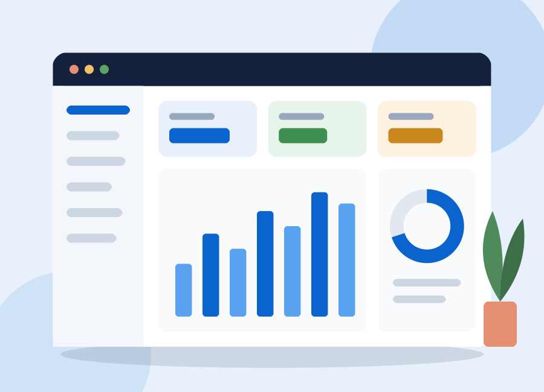

CRM integrat
Interlocutors comercials, oportunitats de venda, activitats i campanyes connectades amb les comandes i la facturació.
SAP Business One uneix finances, vendes, CRM, compres, inventari i producció en una única base de dades. Menys fulls de càlcul, més control i dades en temps real per decidir millor.

Una sola solució per gestionar el dia a dia de l'empresa, des del primer contacte amb el client fins al tancament comptable.
Interlocutors comercials, oportunitats de venda, activitats i campanyes connectades amb les comandes i la facturació.
Comptabilitat, bancs, compres, vendes, inventari i producció amb MRP, tot sobre la mateixa base de dades.
Amb la base de dades SAP HANA, informes i quadres de comandament es calculen a l'instant sobre les dades vives.
SAP Business One s'adreça a petites i mitjanes empreses, aproximadament d'1 a 300 usuaris, i a filials de grans grups que necessiten un sistema propi i àgil.
Es comercialitza i s'implanta a través de la xarxa de partners de SAP, que adapten el sistema a cada sector.
SAP manté la versió 10.0 i hi afegeix millores amb paquets de funcionalitats periòdics. El paquet 2608 (2026) reforça l'ús des del navegador i incorpora capacitats d'intel·ligència artificial.
Veure tots els mòdulsExplica'ns com treballeu i et preparem una demostració personalitzada de SAP Business One.
Contacta amb nosaltres